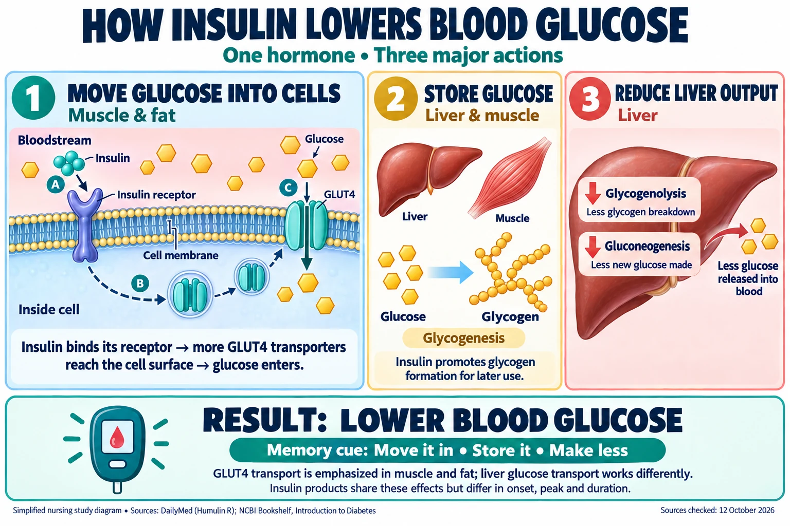

NCLEX Drugs 8 🩸
Insulins: Rapid · Short · Intermediate · Long-Acting · Premixed & Concentrated
One drug, six timing profiles. Every insulin does the same job — moves glucose into cells, converts it to glycogen, and reduces the liver's own glucose release — the entire test is about WHEN each type kicks in, peaks, and wears off, and which one you can push into a vein.
📄 Simple Nursing original — opens in Drive →
Preview the Simple Nursing sheet here
LINEUP
STEP 1 · WHAT'S IN THIS SETRobo's 3-part study map: TYPE → TIMING → WATCH. Timing values below are standard rounded teaching ranges — always verify against your current drug reference/facility policy, since exact figures vary slightly by source.
🧭 This installment covers 6 insulin categories
🏷️ Brand → Generic — memorize the pairs
| Category | Type / Generic | Brand Name(s) |
|---|---|---|
| Rapid-Acting | Insulin Lispro | Humalog |
| Insulin Aspart | Novolog | |
| Insulin Glulisine | Apidra | |
| Short-Acting | Regular Insulin | Humulin R, Novolin R |
| Concentrated Regular | Insulin U-500 | |
| Intermediate-Acting | NPH | Humulin N, Novolin N |
| Long-Acting | Insulin Glargine | Lantus |
| Insulin Detemir | Levemir | |
| Premixed | NPH/Regular | Humulin 70/30, Humulin 50/50, Novolin 70/30 |
| Protamine/Aspart | Novolog Mix 70/30 | |
| Protamine/Lispro | Humalog Mix 75/25 |
ACTION
STEP 2 · TYPE → TIMING → TRAPThe same mechanism, six different clocks — plus the one insulin that can go straight into the vein.
🔬 How insulin lowers blood glucose

Read the diagram as text
1. Move glucose into cells — muscle and fat
- Insulin binds the insulin receptor.
- Signaling brings more GLUT4 transporters to the cell surface.
- Glucose enters through GLUT4.
2. Store glucose — liver and muscle
Glycogenesis: insulin promotes glycogen formation for later use.
3. Reduce liver output — liver
- Glycogenolysis goes down: less glycogen breakdown.
- Gluconeogenesis goes down: less new glucose made.
- Result: less glucose released into the blood.
Result: lower blood glucose
Memory cue: Move it in • Store it • Make less.
- GLUT4 transport is emphasized in muscle and fat; the liver takes up glucose differently.
- Insulin products share these effects but differ in onset, peak and duration.
Sources checked 12 October 2026: DailyMed: Humulin R, 12.1 · DailyMed: Humulin N, 12.1–12.2 · NCBI: Introduction to Diabetes · StatPearls: Insulin metabolic effects. A simplified study diagram by Codex, not a publisher illustration.
⏱️ Onset → Peak → Duration, side by side

A familiar suffix suggests a drug family but does not replace checking the actual medicine.
Read the picture
Verify the order
Patient, drug, indication, dose, route and timing.
Check suitability
Allergies, assessment, labs, contraindications and interactions.
Evaluate response
Document administration and reassess effects.
Drug knowledge
Know the purpose, mechanism, major adverse effects and required monitoring.
Calculation
Use correct units and an independent check when required; confirm unusual doses.
Teach back
Ask the patient to explain purpose, schedule and important symptoms to report.
⚡ Rapid-Acting Lispro · Aspart · Glulisine
Action: moves glucose into cells, promotes glucose → glycogen conversion, and suppresses the liver's own glucose release — same as every insulin, just on a fast clock.
⭐ Key nursing point: give within about 15 minutes of a meal — food must be available and eaten close to administration or hypoglycemia can follow quickly.
🩹 Short-Acting — Regular Humulin R · Novolin R · U-500
Action: same glucose-lowering mechanism; clear in appearance.
⭐ Key nursing point: Regular insulin is the only insulin that can be given IV (commonly used in DKA/insulin drips). Insulin U-500 is a highly concentrated form — extra caution with dosing to avoid a 5x overdose error.
🌫️ Intermediate-Acting — NPH Humulin N · Novolin N
Action: same mechanism, delayed onset and a broad mid-day peak; appearance is cloudy.
⭐ Key nursing point: gently roll (do not shake) the vial to resuspend before drawing up — must be given SQ only, never IV or IV drip. Time meals/snacks to cover the expected peak, when hypoglycemia risk is highest.
🕰️ Long-Acting Glargine (Lantus) · Detemir (Levemir)
Action: same mechanism, delivered as a steady, flat basal dose across the day.
⭐ Key nursing point: glargine has no pronounced peak and is typically dosed once daily; detemir may be dosed once or twice daily depending on control needed.
🧪 Premixed Insulins 70/30 · 75/25 · 50/50
Action: a fixed-ratio combination of an intermediate component (cloudy, for background coverage) and a rapid/short component (for meal coverage) in one syringe or pen.
⭐ Key nursing point: convenient — fewer injections — but less flexible than dosing each component separately; timing must still match a meal for the fast-acting portion to work correctly. Given SQ only.
TEACH
STEP 3 · SAFETY & PATIENT TEACHINGMixing technique, and the emergency that matters more than any timing chart.
🌫️ Mixing Regular + NPH in one syringe — "clear before cloudy"
🍬 Hypoglycemia — the most deadly acute risk
Standard adult reference: hypoglycemia is generally defined as blood glucose <70 mg/dL.
- 😓 Shaky, sweaty, confused, rapid heartbeat, hunger, irritability
- 🍬 Rule of 15: give 15g fast-acting carbohydrate, recheck glucose in 15 min, repeat if still low
- 🆘 If unconscious/unable to swallow: IM/IV glucagon or IV dextrose per protocol — do not give oral carbs
📊 Hypoglycemia vs. Hyperglycemia — quick contrast
| Hypoglycemia (low) | Hyperglycemia (high) |
|---|---|
| Onset: fast, minutes | Onset: slower, hours to days |
| Skin: cool, clammy, sweaty | Skin: warm, dry |
| Shaky, confused, irritable, hungry | Thirsty, frequent urination, fruity breath (DKA) |
| Treat: Rule of 15 / glucagon | Treat: insulin per order, fluids, monitor for DKA/HHS |